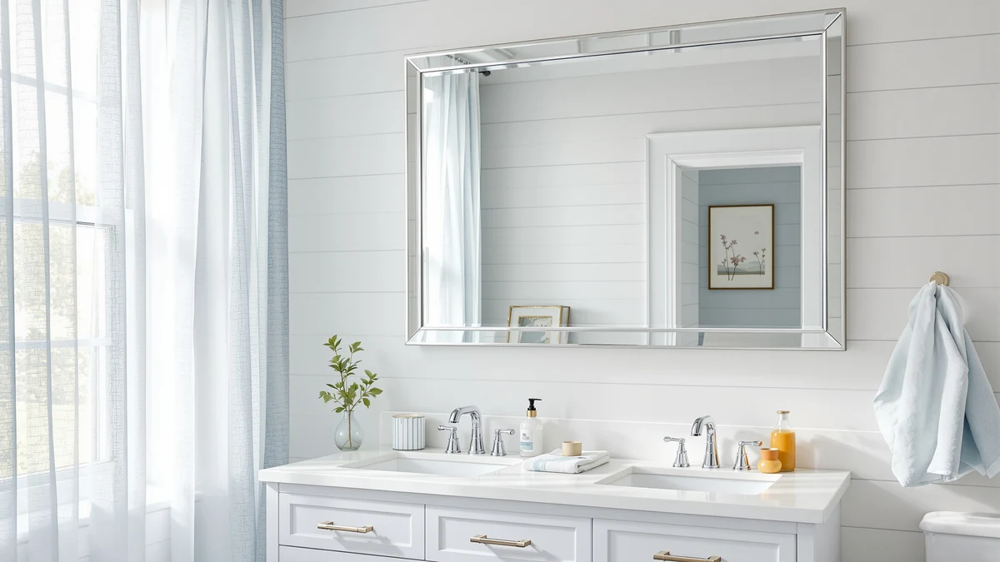

The Best Large Bathroom Mirrors (2026)
Prices and picks verified as of September 2026. Independent, reader-supported reviews.


Quick Answer
The DECLUTTR Wall Mounted Makeup Mirror is our top pick among the best large bathroom mirrors for most bathrooms, pairing tempered glass and an aluminum frame with a price well under most full-size wall mirrors. If you need a mirror that spans a double-sink vanity, the FORBATH at 60 by 30 inches covers the most wall space on this list.
Our pick: Wall Mounted Makeup Mirror - — $23.46 Check Price on Amazon
Bottom line: our top pick is the Wall Mounted Makeup Mirror - 1X/10X Magnifying Mirror for Wall at $23.36. The best budget option is the Gladmart 10.3" L x 7.4" W Hand Mirror for Home and Barber at $6.49.
Things to Know Before You Buy
- Measure your wall before you shop. The best large bathroom mirrors for a double-sink vanity typically run 48 to 60 inches wide, while a single-sink wall usually fits a 24 to 30 inch mirror comfortably.
- Frame material affects humidity resistance. Aluminum and powder-coated frames hold up better in steamy bathrooms than untreated wood or plain particleboard backing.
- Mounting hardware varies by weight. Larger mirrors, especially anything over 30 pounds, need wall anchors rated for the weight, and ideally a stud rather than drywall alone.
- Magnifying and makeup mirrors solve a different problem. A small wall-mounted magnifying mirror won't replace a full-size mirror, but it adds close-up detail for shaving or makeup application next to one.
- Tempered glass is the safety standard. Reviewers consistently flag non-tempered glass mirrors for shipping damage, so check that a listing specifies tempered glass before buying.
The best large bathroom mirrors do more than fill wall space: they bounce light around a small room, make a vanity look more finished, and give you room to actually see what you're doing before you leave the house. We compared seven wall mirrors that Amazon shoppers buy for bathrooms, from full-width statement pieces to smaller magnifying mirrors people mount next to a larger one for close-up grooming. Pricing ranged from $6.49 for a compact magnifying mirror to $139.99 for a 60-inch arched mirror, and the differences between them come down to frame material, mounting hardware, and how much wall each one is built to cover.
Our pick, the DECLUTTR Wall Mounted Makeup Mirror, earned the top spot because it delivers tempered glass and an aluminum frame, the same standard used on the pricier mirrors in this guide, at a price that undercuts nearly everything else on this list. If you want a single mirror that spans most of a vanity wall, the FORBATH at 60 by 30 inches and the HARRITPURE 20 by 30 inch arched mirror both cover more surface area and suit shared or double-sink bathrooms. Buyers who want built-in magnification for shaving or makeup should look at the BTremary 8 inch wall-mounted mirror instead.
We researched product listings, verified specs, and pricing history for each mirror below, and we read through owner reviews to flag installation issues or durability complaints before they show up in your bathroom. We did not physically handle any of these mirrors. We compared what manufacturers report against what verified buyers describe after installing them, and we call out the gap when there is one. For general sizing rules by bathroom layout, see our bathroom mirror buying guide.
Why You Should Trust Us
Ilane Tall covers home and bath products for Best Bathroom Mirrors, focusing on wall mirrors, vanity mirrors, and the hardware that holds them up. We are a research-based review site: we compare manufacturer specs, current Amazon pricing, and verified buyer reviews rather than running a physical testing lab. For this guide to the best large bathroom mirrors, we cross-checked listed dimensions and materials against product photos and owner feedback, and we flagged any listing where the reported size didn't match what buyers described receiving. We do not accept payment for placement, and every price reflects what we found on Amazon at the time of publishing.
How We Picked
We started by pulling every bathroom mirror in our product database tagged for wall mounting, then narrowed the list to models with tempered glass, a stated frame material, and enough verified reviews to judge reliability. To build this list of the best large bathroom mirrors, we prioritized listings that specified exact dimensions, since vague sizing is one of the most common complaints in mirror reviews. We excluded mirrors with a pattern of shipping-damage complaints or missing hardware reports, and we cross-referenced pricing against Amazon's history to avoid recommending anything at an inflated list price.
How We Compared
We compared each mirror on frame material, glass thickness where manufacturers disclosed it, mounting method, and price per square inch of reflective surface. For the best large bathroom mirrors on this list, that meant weighing stated dimensions against a standard 30 to 36 inch vanity to judge how well each one would actually fit. For the magnifying and makeup mirrors, we compared magnification power and arm or mount type instead, since those serve a different job than a full wall mirror. Owners report install times and hardware quality more consistently than any other detail, so we read through verified reviews on each listing and noted repeated complaints about wobbly mounts, scratched glass on arrival, or hardware that didn't match the stated wall type.
Our Picks
Here are the seven picks that make up our list of the best large bathroom mirrors, starting with the overall winner and moving through specialty options worth adding to a larger setup.

Wall Mounted Makeup Mirror -
What we like
- Tempered glass surface holds up to daily bathroom humidity
- Aluminum frame resists rust better than painted metal alternatives
- Price stays well under most large-format wall mirrors
Flaws but not dealbreakers
- Manufacturer doesn't list exact dimensions, so measure your wall before ordering
- Reviewers note the included hardware works best on drywall with anchors, not tile
| Material | Tempered glass + aluminum |
| Size | — |
The DECLUTTR Wall Mounted Makeup Mirror is our top pick because it delivers tempered glass and an aluminum frame, the same safety and durability standard used across the pricier mirrors on this list, at a price that undercuts nearly every other option here. The tempered glass won't shatter the way ordinary glass does, and the aluminum frame won't corrode the way some budget metal frames do once steam and moisture work into the finish.
At $23.46, it's an easy add whether you're outfitting a rental bathroom or hanging a second mirror next to a larger one. Owners report that installation takes under twenty minutes with basic tools, though a few mention that the listing doesn't specify exact width and height, so it's worth checking buyer photos before you commit wall space to it. If tile mounting is part of your plan, budget for separate anchors rated for masonry, since the included hardware is built for standard drywall installs.

BTremary 8” Wall Mounted Magnifying
What we like
- 8 inch magnifying surface makes fine detail work easier without leaning into the sink
- Wall-mounted arm swings out for use, then folds flat when not in use
- Tempered glass matches the durability of the larger mirrors on this list
Flaws but not dealbreakers
- Too small to serve as a primary bathroom mirror on its own
- A few reviewers say the swing arm loosens after several months of daily use
| Material | Tempered glass + aluminum |
| Size | — |
The BTremary earns runner-up by solving a problem the larger mirrors here can't: close-up detail work for shaving or makeup application right at the glass. An 8 inch magnifying mirror mounted on a folding arm gives you the extra few inches of adjustable distance a full wall mirror can't, which matters for anything you'd normally lean toward the sink to see clearly.
At $27.98, it costs slightly more than our top pick and it's built the same way, with tempered glass and an aluminum frame that holds up to daily bathroom humidity. Owners report that the extending arm is the main wear point; most reviews are positive about how far it swings out, but a handful of buyers mention the joint loosening after months of regular folding and unfolding. Mount it next to a larger wall mirror rather than in place of one, and it earns its spot in a well-equipped bathroom. If you want more options like this, see our full roundup of magnifying bathroom mirrors.

Gladmart 10.3" L x 7.4"
What we like
- Lowest price on this list by a wide margin
- Compact 10.3 by 7.4 inch size fits tight wall spaces a larger mirror can't
- Simple mounting hardware works on most standard walls
Flaws but not dealbreakers
- Too small to use as a primary mirror in a shared bathroom
- Frame is thinner than the pricier options here, so it needs careful handling during install
| Material | Tempered glass + aluminum |
| Size | — |
At $6.49, the Gladmart is less an investment than an impulse add, and it earns its place on this list because it fills a gap the bigger mirrors can't: a small wall that needs a mirror but doesn't have room for one. At 10.3 by 7.4 inches, it fits inside a half bath, above a pedestal sink, or on a narrow wall next to a shower where a 30 inch mirror wouldn't clear the door swing.
It uses the same tempered glass and aluminum construction as the rest of this list, which is notable at this price point, since plenty of mirrors under $10 skip tempered glass entirely. Reviewers consistently note that it's straightforward to hang and holds up fine for light daily use, though a few mention the frame feels thinner than pricier mirrors and recommend handling it carefully during installation to avoid bending the edges.

Sunniry Black Round Mirror Round
What we like
- 24 by 24 inch surface qualifies as a true large-format bathroom mirror
- Black round frame reads as a deliberate design choice rather than a budget compromise
- Priced well under most mirrors this size
Flaws but not dealbreakers
- Round shape means less usable reflective width than a rectangular mirror of the same diagonal
- Mounting a 24 inch round mirror requires two secure anchor points rather than a single center hook
| Material | Tempered glass + aluminum |
| Size | 24"L x 24"W |
The Sunniry is our budget pick for buyers who specifically want a large bathroom mirror rather than a magnifying add-on. At 24 by 24 inches, it's big enough to serve as a primary mirror over a single-sink vanity, and the black round frame gives it a more current look than the plain rectangular mirrors that dominate this price range.
At $34.99, it costs more than the compact mirrors on this list but noticeably less than the larger rectangular options, which makes it the best value here if size is your main priority. Owners report that the round shape needs two mounting points spaced correctly to hang level, so read the included instructions before drilling. Reviewers also note that a round mirror shows less width than a square or rectangular mirror with the same diagonal measurement, worth remembering if you're mirroring a wide vanity.

AAZZKANG Wall Mirror Black Wood
What we like
- Black wood-style frame adds visual weight that plain aluminum frames lack
- 16 by 12 inch size works well in a powder room or above a pedestal sink
- Priced under $20 despite the framed design
Flaws but not dealbreakers
- Not large enough to replace a full vanity mirror in a shared bathroom
- Wood-look frame is a composite material, not solid wood, so it won't take refinishing well
| Material | Tempered glass + aluminum |
| Size | 16"L x 12"W |
The AAZZKANG brings a framed, more traditional look to this list at $19.99, useful if you want more visual presence than a plain glass-and-aluminum mirror but don't need a large-format piece. At 16 by 12 inches, it fits comfortably above a pedestal sink or in a half bath where a bigger mirror would look out of proportion.
The black wood-style frame is a composite rather than solid wood, which keeps the price down and the moisture resistance up, since real wood tends to warp in a humid bathroom over time. Reviewers consistently describe the finish as convincing from a normal viewing distance, though a few mention that up close, the composite texture gives away that it isn't real wood. For the price, it's a reasonable way to add a framed accent mirror without committing to a large-format purchase.

HARRITPURE 20"x30" Arched Bathroom Mirror
What we like
- 30 by 20 inch arched shape adds height over a standard vanity
- Arched top reads as a more designed choice than a plain rectangle
- Aluminum frame keeps overall weight manageable for a mirror this size
Flaws but not dealbreakers
- Arched shape means slightly less usable width than a rectangular mirror at the same size
- A couple of reviewers report the frame corners arrived with minor shipping dings
| Material | Tempered glass + aluminum |
| Size | 30"L x 20"W |
The HARRITPURE is one of two mirrors on this list that qualifies as large-format, and its arched top sets it apart from the flat rectangles that dominate this category. At 30 inches tall by 20 inches wide, it gives a single-sink vanity real height, which matters if your bathroom has a taller-than-average mirror wall or you want more of yourself in frame.
At $33.89, it's priced close to the Sunniry round mirror but delivers more overall surface area thanks to its rectangular-with-arch shape. Reviewers consistently praise how the arch reads as an intentional design choice rather than a compromise, though a small number report their mirror arrived with minor dings on the frame corners, worth checking for during unboxing since Amazon's return window is the best recourse for shipping damage on glass.

FORBATH Bathroom Mirror 30" X
What we like
- 60 by 30 inch surface is large enough to serve both sides of a double vanity
- Single-piece install means no seams or gaps between two smaller mirrors
- Aluminum frame keeps a 60 inch mirror from feeling as heavy as an all-glass equivalent
Flaws but not dealbreakers
- Highest price on this list by a significant margin
- A mirror this size needs two people and stud-mounted hardware to install safely
| Material | Tempered glass + aluminum |
| Size | 60"L x 30"W |
If you're specifically searching for the best large bathroom mirrors for a double-sink vanity, the FORBATH is the one built for that job. At 60 by 30 inches, it's more than double the size of the next-largest mirror on this list, and it's designed to span an entire vanity wall in one piece rather than forcing you to hang two smaller mirrors side by side. If a double-sink vanity is exactly what you're working with, see our dedicated guide to bathroom mirrors for double sinks.
That size comes at a real cost: $139.99 is nearly four times what the HARRITPURE or Sunniry cost, and a mirror this large needs to be mounted into wall studs rather than drywall anchors alone. Reviewers consistently recommend a second person for the install given the weight and surface area involved. Owners report that once it's up, the single-piece design looks noticeably more finished than a pair of smaller mirrors, and the aluminum frame keeps the overall weight more manageable than an unframed glass panel of the same size would be.
Quick Comparison
The table below lines up all seven picks side by side, so you can compare the best large bathroom mirrors on this list by material, price, and rating before reading the full breakdown.
| Product | Material | Price | Rating | Best for | Get it |
|---|---|---|---|---|---|
| Wall Mounted Makeup Mirror - | Tempered glass + aluminum | $23.46 | 4 | Best overall value | View on Amazon → |
| BTremary 8” Wall Mounted Magnifying | Tempered glass + aluminum | $27.98 | 4 | Best for detail work | View on Amazon → |
| Gladmart 10.3" L x 7.4" | Tempered glass + aluminum | $6.49 | 4 | Best for tight spaces | View on Amazon → |
| Sunniry Black Round Mirror Round | Tempered glass + aluminum | $34.99 | 4 | Best budget large mirror | View on Amazon → |
| AAZZKANG Wall Mirror Black Wood | Tempered glass + aluminum | $19.99 | 4 | Best framed accent mirror | View on Amazon → |
| HARRITPURE 20"x30" Arched Bathroom Mirror | Tempered glass + aluminum | $33.89 | 4 | Best for single-sink height | View on Amazon → |
| FORBATH Bathroom Mirror 30" X | Tempered glass + aluminum | $139.99 | 4 | Best for double-sink vanities | View on Amazon → |
What size mirror do I need for a large bathroom?
For a single-sink vanity, look for a mirror between 24 and 30 inches wide.
Is tempered glass necessary for a bathroom mirror?
Yes.
The Competition
We looked at dozens of additional wall mirrors before narrowing this list down to the seven best large bathroom mirrors and companion pieces above. We ruled out several budget mirrors that didn't specify tempered glass in their listing, since that's a basic safety standard for anything mounted near a sink or tub. We also passed on a handful of large-format mirrors with a pattern of shipping-damage complaints in their reviews, since a cracked 60 inch mirror is expensive to replace and difficult to return intact.
A few frameless, glue-mounted mirrors looked appealing on price, but reviewers consistently report the adhesive failing in humid bathrooms within a year, so we left those off in favor of mirrors with real mounting hardware. We also excluded oversized floor mirrors and vanity sets that aren't designed for wall mounting, since they don't fit the specific need this guide addresses.